FOOTBALL OUR WAY
FRIENDLY • CHAMPIONSHIP • CUP • PENALTIES • FUTSAL • WALL MODE
PC (keyboard and controller) • Android (touch and controller) • reference: build 52.9
KICK-OFF.
FUTIBA is videogame football the old way: quick passes, slide tackles that hurt, goalkeepers who decide. Fewer buttons, more reading of the game: the same button does different things with and without the ball.
Friendly to go straight to a match, Championship and Cup for a campaign, Penalties for a duel, Indoor for futsal and wall mode.
32 clubs, each with a squad, ratings, formation and a portrait for every player.
Adjust the line-up and the formation. In futsal and wall mode, pick who plays outfield.
Read the pitch, move the ball and choose the moment to shoot.
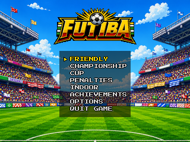
FROM THE MENU TO THE CENTRE CIRCLE.
The path to a match on the pitch. On every screen, the game shows the buttons for that moment at the bottom.
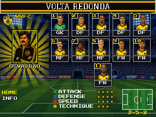
←/→ change club. Confirm the home team, then the away team. ↓ goes to INFO, with the club's story.
Choose who you control (home, away or just watch), the stadium (12), the time of day (day, sunset, night) and the weather (sun or rain).
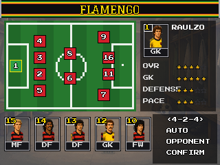
Confirm one player and then another to swap them, bench included. At the bottom: formation, AUTO (the game picks), OPPONENT (see the rival) and CONFIRM.
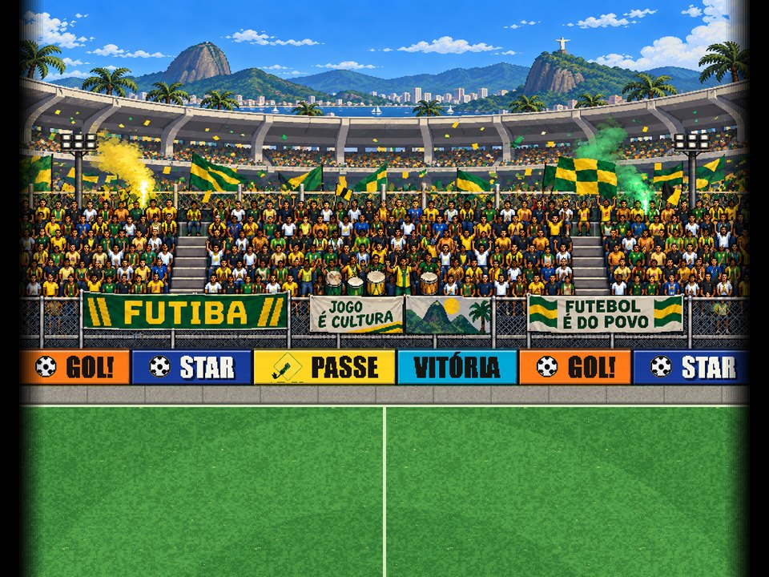
The camera tours the stand and comes down to the pitch. START skips it.
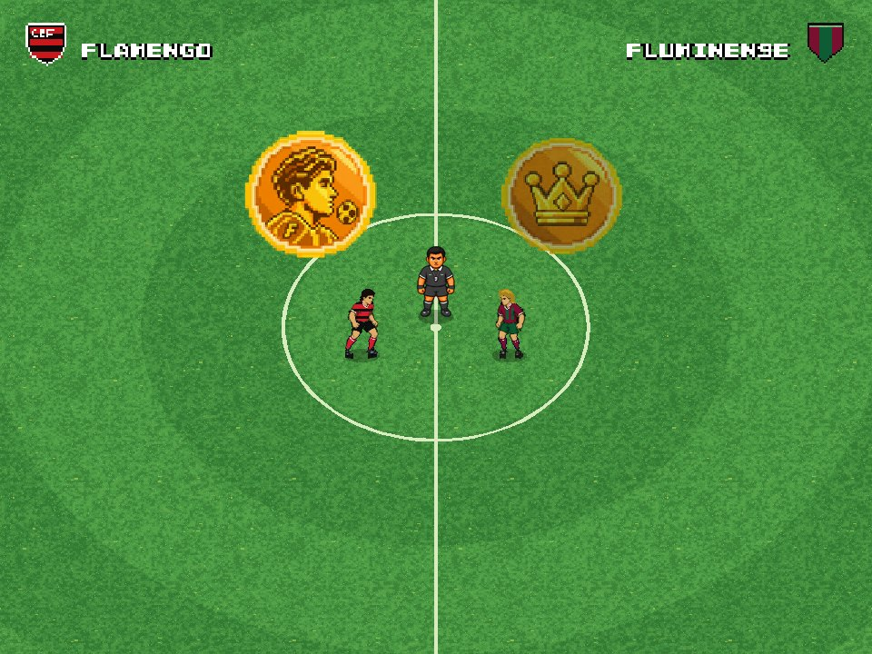
←/→ pick heads or tails; confirm flips the coin.
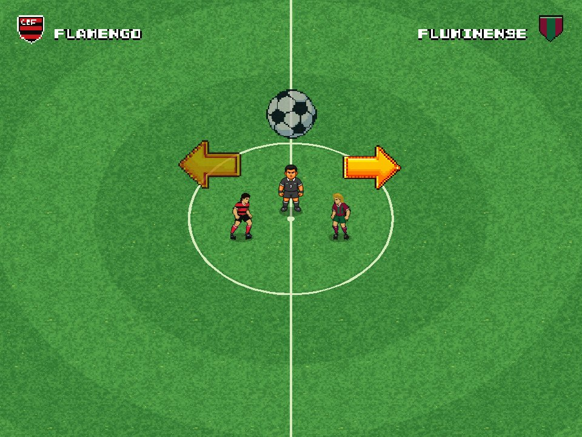
If you won: ↑ keeps the ball; ← or → picks the end. If the rival won, you watch their choice.
WHAT IS ON SCREEN.
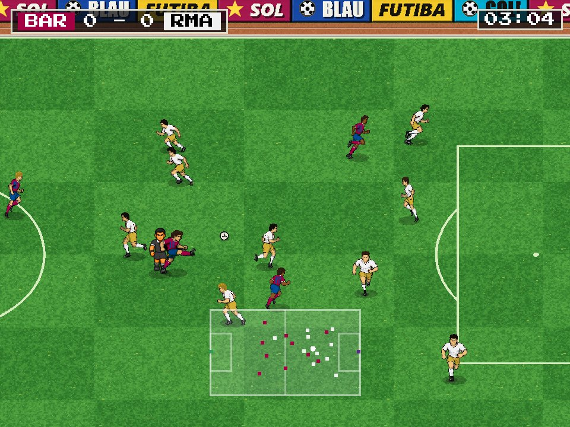
RESUME, TACTICS and QUIT MATCH.
Formation and up to 3 substitutions. They apply at the next restart.
Line-up screen to change the team. In the 2nd half the ends swap.
The scorer celebrates, the rival laments, then comes the replay. START shortens it.
Fouls, yellow, red and injuries. A red on your team: back to the line-up to reorganise.
Summary with the goals. REMATCH, NEW TEAMS or MODE SELECT.
PICK YOUR FIGHT.
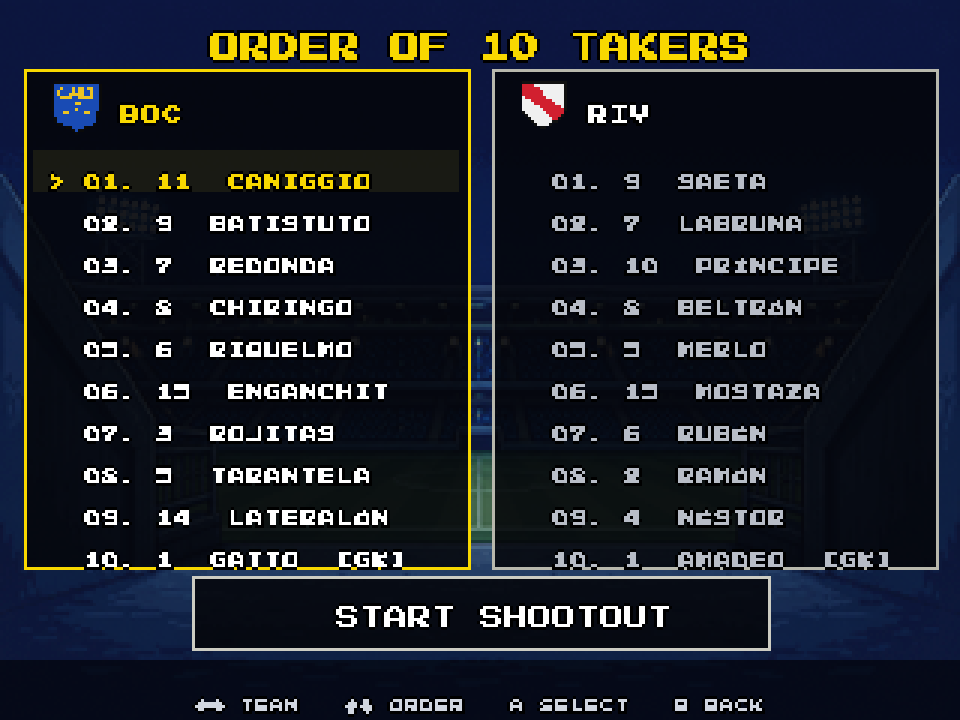
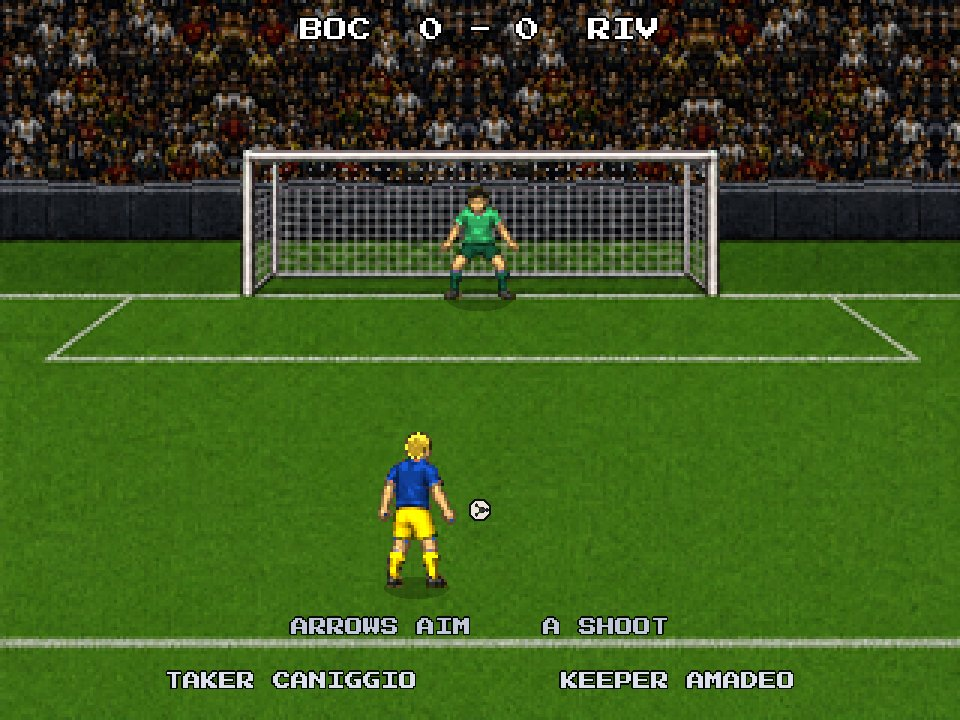
FUTSAL AND WALL MODE.
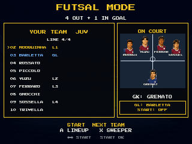
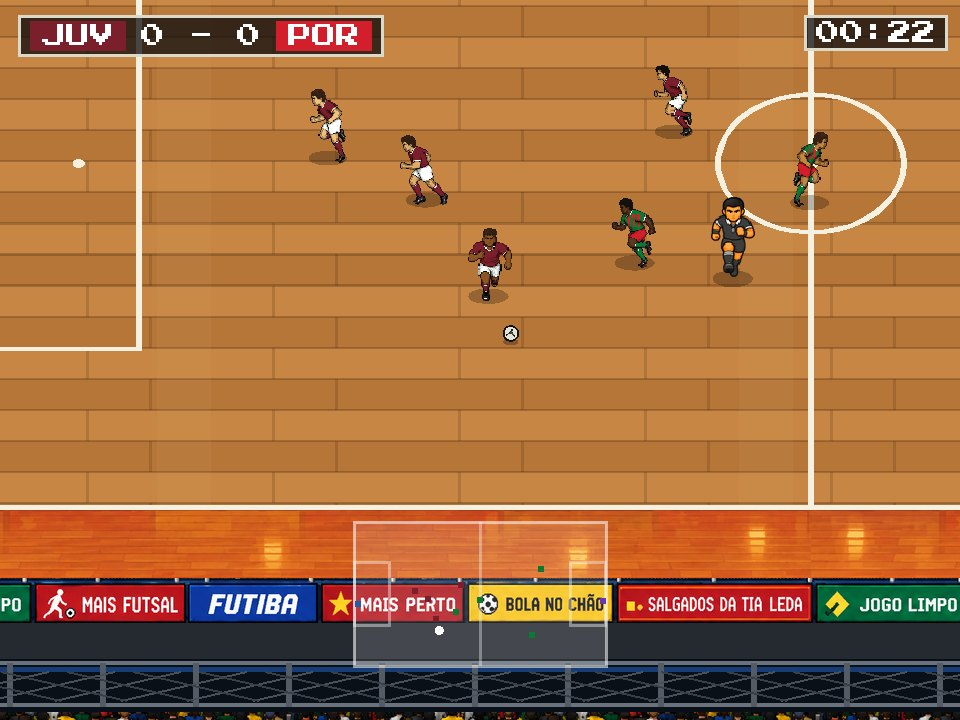
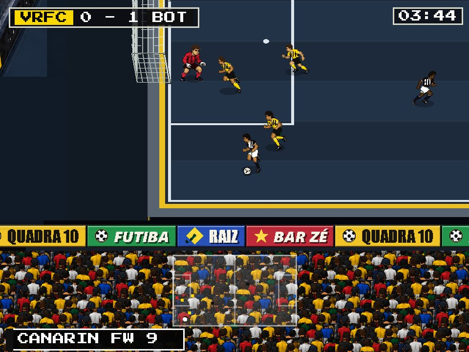
KEYBOARD.
In the match the player moves with the arrow keys only. WASD works in the menus.
| KEY | WITH THE BALL | WITHOUT THE BALL |
|---|---|---|
| ←↑↓→ | Move and aim passes, crosses and shots | Move |
| Z | Pass (to the teammate in that direction) | Standing tackle. Hold to chase the ball |
| X | Shoot. Hold for more power (↑/↓ change the height at the goal) | Aerial duel (header, diving header) or switch player |
| A | Cross or long ball. Hold for more power | Slide tackle |
| SHIFT | Hold to sprint. One tap: dribble (roll or cut). Two quick taps: step-over | Sprint |
| SPACE | Rainbow flick (midfielders and forwards). During it, X is a bicycle kick | — |
| PENTER | Pause. ENTER also skips the opening and shortens the replay | Pause |
Futsal: SHIFT + Z = through ball. With SHIFT held, the pass always goes in behind.
Arrows or WASD navigate · Z or ENTER confirm · ESC or X go back · ←/→ change values · L opens the album in achievements.
CONTROLLER.
Xbox button names. On other controllers, use the button in the same position.
| BUTTON | WITH THE BALL | WITHOUT THE BALL |
|---|---|---|
| D-PAD / STICK | Move and aim | Move |
| A | Pass | Standing tackle. Hold to chase the ball |
| X | Shoot. Hold for more power | Aerial duel or switch player |
| Y | Cross or long ball. Hold for more power | Slide tackle |
| RB | Hold to sprint. Tap: dribble. Two taps: step-over | Sprint |
| LB + Y | Rainbow flick (midfielders and forwards). During it, X is a bicycle kick | — |
| START | Pause · skip the opening · shorten the replay | Pause |
Futsal: LB + A = through ball.
Set pieces follow the keyboard logic: A short pass, X shot, Y cross. B does nothing in the match: it only goes back in menus.
D-pad or stick navigate · A confirms · B goes back · LB opens the album in achievements.
ON-SCREEN CONTROLS.
The game sits in the middle, in 4:3. The controls sit on the black bars at the sides, without covering the pitch.
When a screen is waiting for you, the right button gets a blinking golden ring. In menus it is A (with the word OK). In the futsal and wall set-up it is START. In the match: START at the opening and the replay; A at the coin toss, the pause and full time.
| BUTTON | IN THE MATCH | IN MENUS |
|---|---|---|
| D-PAD | Move (diagonals work). Slide your finger without lifting it | Navigate |
| A | Pass · without the ball, tackle (hold to chase the ball) | Confirm |
| B | Shoot (hold for more power) · without the ball, aerial duel or switch | Back |
| C | Cross (hold for more power) · without the ball, slide tackle | — |
| L1 | Hold to sprint · two taps: step-over · L1 + C rainbow flick · futsal: L1 + A through ball | Album in achievements |
| START | Pause · skip the opening · shorten the replay | Moves on in the futsal and wall set-up |
WITH A CONTROLLER.
The Android controller version is for handhelds with physical buttons (R36S, Anbernic, Retroid…) or a phone with a paired controller. Nothing shows on screen: the game sits in 4:3 in the middle and the buttons are the same as the controller on PC (page 8).
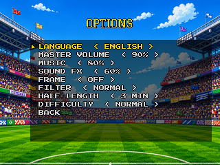
Win the Cup or the Championship and two hidden teams show up. And anyone who played videogames in the 90s knows: the opening screen always has a code.
12 achievements unlock stickers in the FUTIBA album: first win, comeback, thrashing, hat-trick, own goal, playing a man down…